POVRayRenderLighting
光源の設定について¶
POV-Ray rendering dialogを利用してrenderingをおこなうにあたって， シーンによっては光源の設定を変えたほうが見やすくなる場合があります．
光源設定は，POV-Ray optionsタブのLightingで設定できますが（下図参照）， 設定方法はrenderingの方法（Raytracing法かRadiosity法か）によって変わってくるため，個別に説明します．
{kind=link}
光源の種類¶
CueMolが出力するPOV-Rayファイルでは，以下の２つ（Radiosityの場合は３つ）の光源を使用してrenderingするようになっています．
- Spot light
- 視線の右斜め後ろから照らしている，影を作る光源．ただし下記のShadowがoffの場合は（光は当たるものの）影が生成しないようにrenderingされる．
- Flash light
- 視点とまったく同じ位置から照らしている，影を作らない光源．視線と同じ方向を向いているので原理的に影が出来ない．そういう意味で，カメラで撮影する場合のフラッシュ光に似た光源である．
- Ambient light
- シーン周囲からランダムに照らす，間接照明的な散乱光源．Raytracing法では使用できない．
以下はdialogの各設定の説明です．
Raytracing法の場合¶
- Shadow
- Onにすると，視線の右斜め後ろからスポットライトで照らしたような影が出るようになる．（左off, 右on）
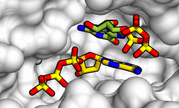 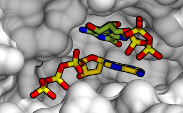 - Use default settings
- 光源の設定をdefaultでrenderingします．通常はこれで十分ですが，明るくしたいあるいは暗くしたい場合はcheckを外して，後述の設定値を変更します．
- Spread
- Shadowを作るspot lightの広がりを指定する．1では完全な点光源となりはっきりとした影が出るようになるが，増やすと光源が広がり，影がソフトになる．最大値10ではほとんど影の輪郭が分からなくなる．Spreadを2以上に設定すると，陰影の計算が複雑になるためrenderingに時間がかかるようになる．まずは1で試して必要に応じて最終画像を作成する際に増加させたほうが良い．下図はspread=3の場合．
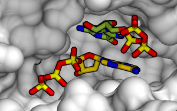 - Intensity
- 全体としての光量を指定する．大きいほうが明るくなる．
- Flash fraction
- 上記のIntensityのうち，Flash lightが占める割合を指定する．この値を大きくすると暗闇でフラッシュをたいて撮影した写真のような感じになる．（左：Flash fraction=1.0，右：Flash fraction=0.0）
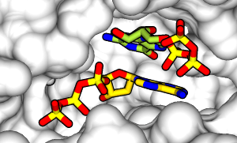 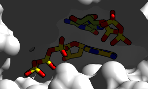
{kind=link}
{kind=link}
{kind=link}
{kind=link}
{kind=link}
ちなみに，Raytracing法の場合は，shadowをon/offにする，あるいはspreadを１以上にする，以外はあまり設定をdefaultから変更しなくても適当な明るさの画像が出来るようです．
特に，シャープな影が出来てしまって図の色などが識別しにくくなってしまう場合は，spreadを増やしてソフトな影にすると良いでしょう．
Radiosity法の場合¶
- Shadow
- Onにすると，視線の右斜め後ろからスポットライトで照らしたような影が出るようになる．影をつけたほうが立体感が出るが，下図のような構図では暗くなりすぎる傾向がある（左off, 右on）
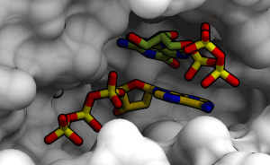 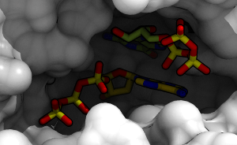 - Use default settings
- 光源の設定をdefaultでrenderingします．通常はこれで十分ですが，明るくしたいあるいは暗くしたい場合はcheckを外して，後述の設定値を変更します．
- Spread
- Shadowを作るspot lightの広がりを指定する．1では完全な点光源となりはっきりとした影が出るようになるが，増やすと光源が広がり，影がソフトになる．最大値10ではほとんど影の輪郭が分からなくなる．Spreadを2以上に設定すると，陰影の計算が複雑になるためrenderingに時間がかかるようになる．まずは1で試して必要に応じて最終画像を作成する際に増加させたほうが良い．下図はspread=3の場合．
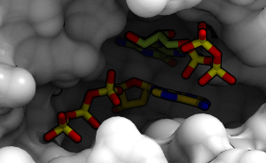 - Intensity
- 全体としての光量を指定する．大きいほうが明るくなる．
- Flash fraction
- 上記のIntensityのうち，Flash lightが占める割合を指定する．この値を大きくすると暗闇でフラッシュをたいて撮影した写真のような感じになる．（左：Flash fraction=1.0，右：Flash fraction=0.5）
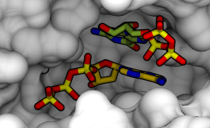 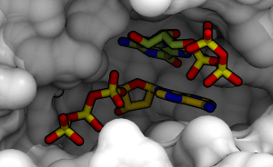
上図からわかるように，Flash fractionを増やすとambient lightの効果が分かりにくくなってしまい，結局raytracing法で作成した画像と大して変わらない奥行き感がない画像になってしまうので注意． - Ambient fraction
- Ambient lightの光量の割合を指定する．具体的には，上記Flash light以外の光量(=Intensity(1-Flash fraction))のうち，何割をambient lightにするかを指定する（具体的にはAmbient光量=Intensity(1-Flash fraction)*Ambient fraction）．Ambient fractionを減らすとradiosity法を使っている意味がなくなってしまうので減らしすぎ内容が良いだろう．
（左：Ambient fraction=1.0，右：Ambient fraction=0）
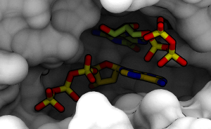 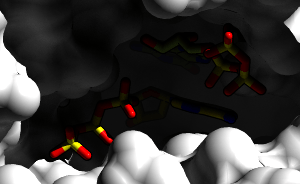
{kind=link}
{kind=link}
{kind=link}
{kind=link}
{kind=link}
{kind=link}
{kind=link}
効率的な設定法¶
Radiosity法の場合は，Ribbon modelなど光が全体に行き渡り易いシーンではdefaultの設定で問題ない場合が多いです．このページのサンプルのようなsurface modelのcavity内の図の場合は，ややシーン全体が暗くなりすぎる傾向があるので，default値からFlash fractionやIntensityを増やしたほうが良いかもしれません．しかしながらrenderingには時間がかかるので，いきなり最終qualityで試行錯誤を行いだすと非常に時間がかかってしまいます．たとえば，以下の方針で行えば効率的に条件検討が行えます．
- RadiosityをFastあるいはOutdoorLQモードにする．cuemol2/Radiosity参照．画像サイズを小さめにして試しにrendering．
- 暗すぎる場合は，Intensity全体を増やす．ただし増やしすぎると露光しすぎた写真のように白っぽい部分が白飛びしたような画像になってしまうので注意．
- あるいは，Flash fractionを増やす．ただし増やしすぎるとフラッシュを焚きすぎた写真のように奥行き感のない画像になってしまうので注意．
- 影がシャープすぎないかもチェックしておく．
- 明るさが満足いくようになったら，RadiosityのモードをOutdoorHQ等にし，最終画像サイズでrenderingする．上記で影がシャープすぎる場合は，ここでspread=3等に増やす．
- 以上でも暗すぎる（あるいは明るすぎる）場合は，Photoshopやgimpでgamma補正やコントラスト調整を行ったほうが早い．